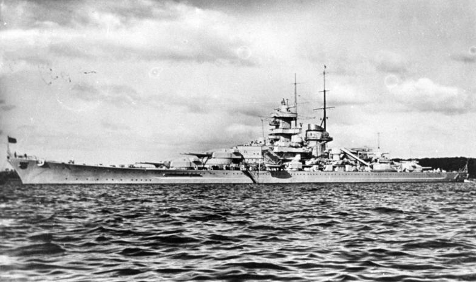

Gneisenau
Acorazado de Alemania, perteneciente a la clase Scharnhorst. Participó con el Scharnhorst en operaciones del Atlántico y de Noruega.

Diseño y función
Gneisenau pertenecía a la clase Scharnhorst. Combate de superficie y operaciones contra el tráfico marítimo. Sus prestaciones se detallan en la tabla técnica, con las fechas o condiciones disponibles en la referencia.
Operaciones y trayectoria
Participó con el Scharnhorst en operaciones del Atlántico y de Noruega. Tras el paso del canal de la Mancha sufrió graves daños en Kiel; el proyecto de sustituir su batería principal no llegó a completarse.
Destino final y conservación
Retirado del servicio y hundido deliberadamente en Gotenhafen como obstáculo portuario en 1945; sus restos fueron desguazados después.